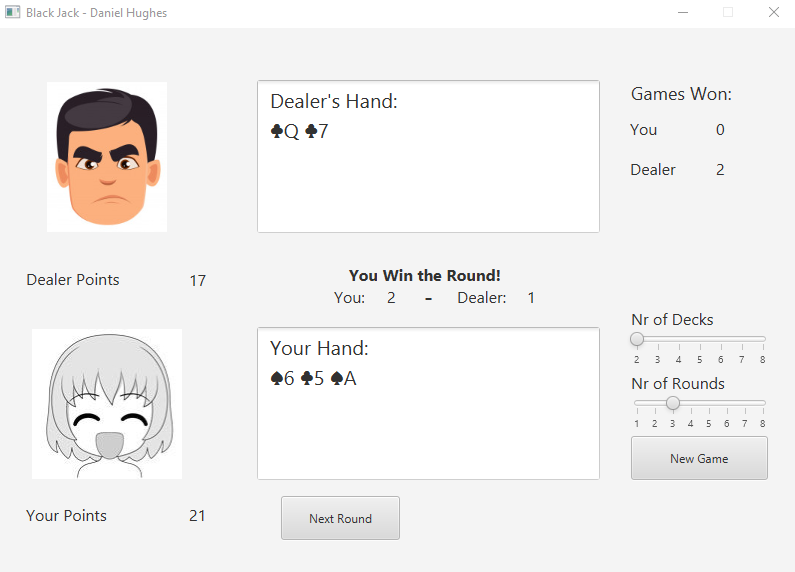

Portfolio
Webshop Simulation
A project that shows a webshop style GUI and interacts with a MySQL database using special procedures to place orders and do other operations while modeling the table entities and using the data in java. - See project on GitHub
Black Jack Game
A simple Black Jack game that shows faces for the player and dealer with reactions to different outcomes. Number of decks and rounds can be set via sliders which saves to properties file. Number of games won or lost are also tracked. The code is written with MVC in mind and implements subject-observer interface. - See project on GitHub
Picture Tile Game
A tile game built in Java Swing with options for playing a picture game or a numbers game. The game can be played normally or with a time limit. The game is multi-threaded featuring advertisement images and facial expressions that get more desperate if you run low on time. These features can be toggled on or off. It's also possible to import custom pictures to play with. - See project on GitHub
Group Project Banking Simulation
In this group project we built two CRUD applications connected to a MySQL database; one for admin and one for customers. In the admin program CRUD operations are possible for most attributes. Once customers log in they can make withdrawals but have limited access. - See project on GitHub